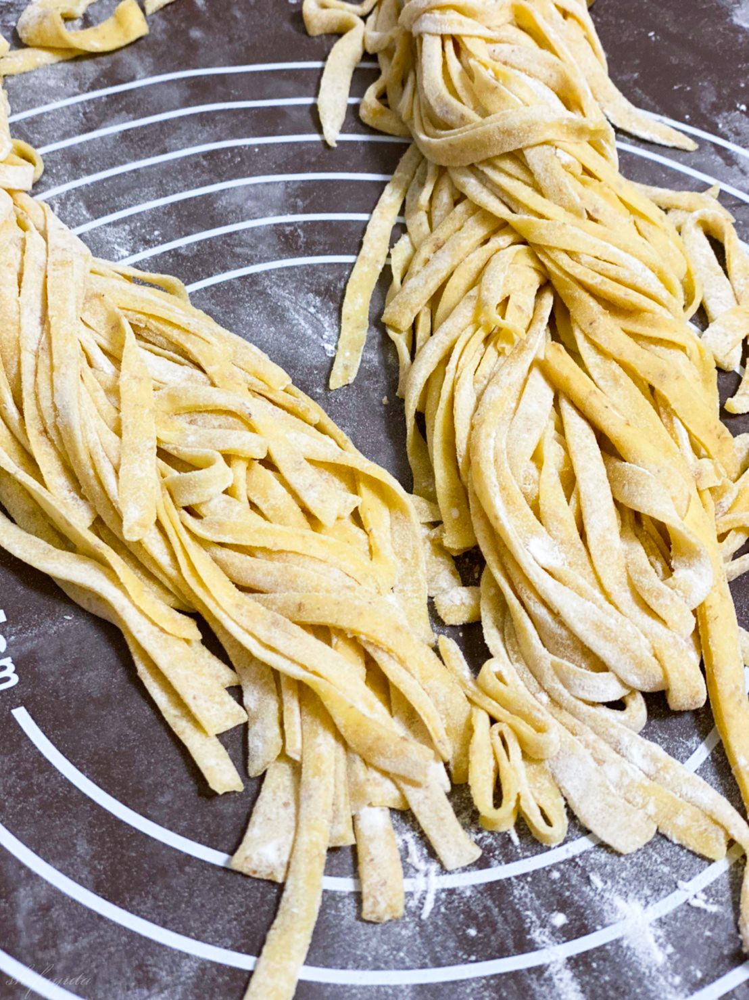

-
 ラザニア
ラザニア -
 和風ペペロンチーノ
和風ペペロンチーノ -
 カレークリーム
カレークリーム -
 アボカドクリーム
アボカドクリーム -
 プッタネスカロッソ
プッタネスカロッソ -
 和風プッタネスカビアンコ
和風プッタネスカビアンコ -
 カルボナーラ
カルボナーラ -
 タイ風パスタ
タイ風パスタ -
 ペスカトーレ
ペスカトーレ -
 トマトとチーズの
トマトとチーズの
フジッリ -
 キノコクリーム
キノコクリーム -
 ボロネーゼ
ボロネーゼ -
 サーモンとキノコのパスタ
サーモンとキノコのパスタ -
 カラスミパスタ
カラスミパスタ -
 トマトクリーム
トマトクリーム -
 ぶたひき肉のパスタ
ぶたひき肉のパスタ -
 ポルチーニチーズクリームパスタ
ポルチーニチーズクリームパスタ -
 ミートボールパスタ
ミートボールパスタ -

自家製パスタ